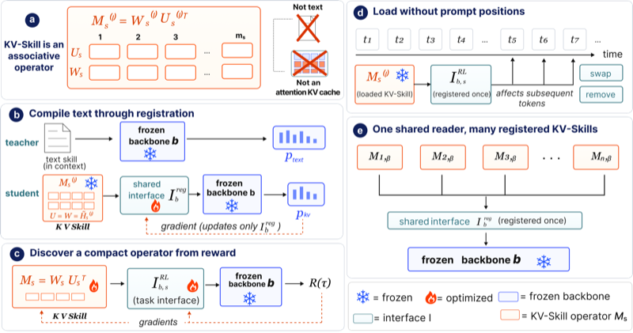
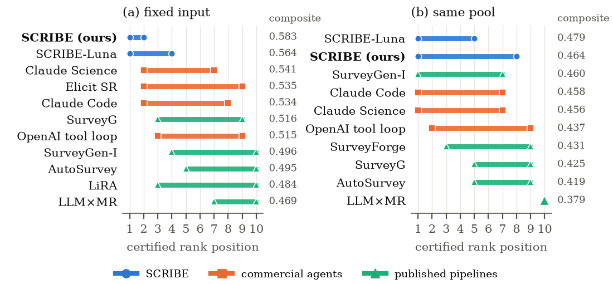
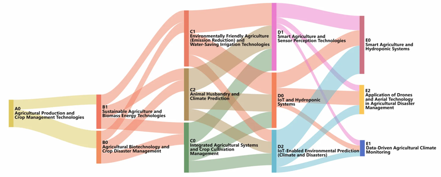
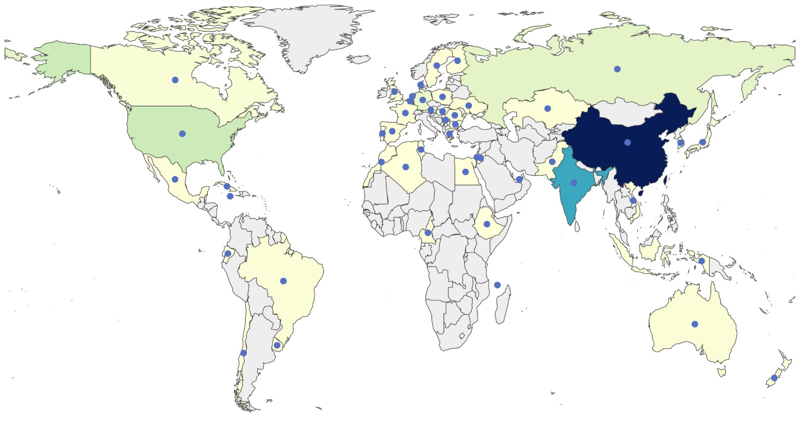

I work with Prof. Jie Liu on representation learning, post-training, and agents for large language models. I also handle most of the technical development of GLKB, the lab's platform for the biomedical literature. Before Michigan, I was a research assistant at the Institute of Automation, Chinese Academy of Sciences (CASIA).
I'm broadly interested in machine learning for language models — how they learn, reason, and act, and how we can tell when they have actually improved. Recently this has meant packaging task expertise as something a frozen model can load on demand (KV-Skill), rethinking how agents are evaluated and trained so that leaderboard gains reflect real capability (What Can a Leaderboard Certify?), and studying credit assignment in RL for reasoning models. I'm also interested in applying these methods to scientific problems, where reliability matters more than benchmark scores.




External task knowledge (KV-Skill). The paper above, but it started as a simpler engineering question: we kept re-sending the same long "how to do this task" prompt to a frozen model and paying for it every call. Compressing that knowledge into KV-cache states, then asking what those states really are, led to the operator view — and to the surprise that a text-derived operator survives truncation to a single task-aligned direction per injection layer.
GLKB, a knowledge platform for the biomedical literature. GLKB is the Liu Lab's platform for searching and synthesizing biomedical research, and I now handle most of its technical development. Its review-writing agent, SCRIBE, is the system we train and evaluate in What Can a Leaderboard Certify?. Before SCRIBE, I built a training-free deep-research agent for GLKB in which every claim has to pass a mechanical faithfulness check before it can be written, which raised fact-level completeness from 0.442 to 0.645 at 55% lower cost with zero fabricated citations. site
Credit assignment in GRPO. At CASIA I noticed that a model's aggregate Pass@1 can rise while its pass rate falls in every reasoning-depth bin — a Simpson's-paradox collapse hidden by the headline number. I derived a variance-update identity that explains the mode-seeking behavior, then built STAGE-GRPO, a stratified-advantage variant that removes the per-bin degradation (MATH-500 Pass@1 0.826 → 0.868). A per-token follow-up is in ablations now. code report
How a model is taught to reason in latent space. Writing every reasoning step as a token is expensive (each one grows the KV-cache) and latent reasoning promises to keep the thinking and drop the tokens. What I found at 1.5B is that how the model is taught to enter latent space decides whether RL can improve it afterwards. A redundancy signal that separates filler steps well offline (AUC ≈ 0.72) was nearly useless as an RL reward: the policy learned to skip 0.1% of steps. And once a step leaves token space, the discrete bottleneck that corrects small errors is gone, a single latent step dropped accuracy from 64.5% to 55%. code report
Spatiotemporal drought forecasting. At the Chinese Academy of Agricultural Sciences, I built a Transformer that fuses gridded spatial features with time series through cross-attention, crossing the query of one stream into the other. On 12 years of ERA5-Land data at 0.1° resolution it reached 98.6% drought-classification accuracy and outperformed LSTM baselines by capturing long-range dependencies in SPI/SPEI indices. I paired it with a drought–water–wheat knowledge graph behind an LLM, so that its recommendations cite evidence instead of hallucinating it.